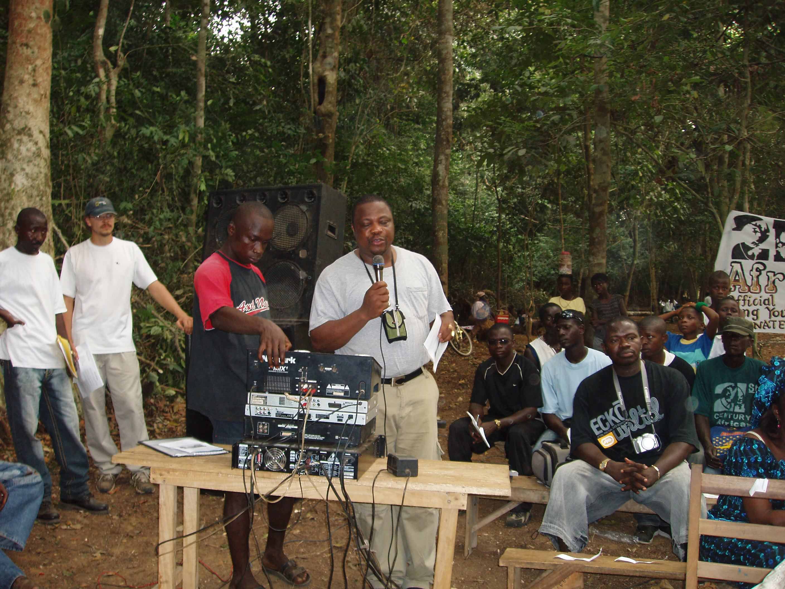

Inspired by History. Led by Youth.
Rooted in the visionary governance of African history, driven today by young leaders transforming communities across the continent.
Founder and CEO
“ We treat young Africans not as leaders of tomorrow, but as the primary drivers of immediate change across our continent. ”
Abu-Hassan Koroma, known as Askia the Great, is the founder, President, and CEO of the Twenty-First Century African Youth Movement (AYM).

Our focus

The Legacy of Askia the Great
Leadership
Meet the rest of the team behind everything
AK
Abu-Hassan Koroma
CEO & PresidentDG
Dennis Charles Glover
Executive Senior Vice President & COOMSK
Mariama Stacy Koroma
Vice President of Finance & CFOES
Erin Summers
Vice President & Director of PhilanthropyDA
Doreen Attikese
Board MemberAN
Annie Ngugi
AYM Executive Director, KenyaSL